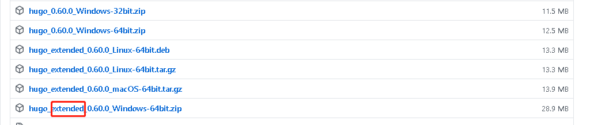
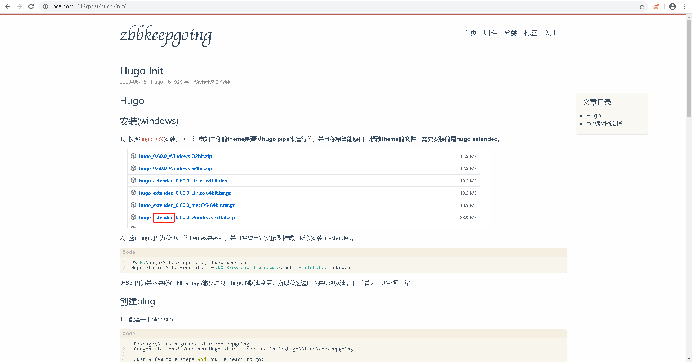

Hugo Init
文章目录
Hugo
Hugo是一个用golang实现的的静态网站生成器。简单、易用、高效、易扩展、快速部署。与之类似的有hexo和jelly。目前社区非常火热，所以博主也利用hugo来搭建自己的blog。
安装(windows)
1、按照hugo官网安装即可，注意如果你的theme是通过hugo pipe来运行的，并且你希望能够自己修改theme的文件，需要安装的是hugo extended。

2、验证hugo,因为我使用的themes是even，并且希望自定义修改样式，所以安装了extended。
lzgn@DESKTOP-ALCHMMB MINGW64 /e/hugo/Sites> hugo version
Hugo Static Site Generator v0.60.0/extended windows/amd64 BuildDate: unknown PS：因为并不是所有的theme都能及时跟上hugo的版本变更，所以我这边用的是0.60版本。目前看来一切都挺正常
创建blog
1、创建一个blog site
lzgn@DESKTOP-ALCHMMB MINGW64 /e/hugo/Sites>hugo new site hugo-blog
Congratulations! Your new Hugo site is created in E:\hugo\Sites\hugo-blog.
Just a few more steps and you're ready to go:
1. Download a theme into the same-named folder.
Choose a theme from https://themes.gohugo.io/ or
create your own with the "hugo new theme " command.
2. Perhaps you want to add some content. You can add single files
with "hugo new \.".
3. Start the built-in live server via "hugo server".
Visit https://gohugo.io/ for quickstart guide and full documentation. 2、创建成功后会在目录下面出来一堆文件夹
lzgn@DESKTOP-ALCHMMB MINGW64 /e/hugo/Sites/hugo-blog>dir
2020/06/16 12:04 archetypes
2020/06/16 12:04 82 config.toml #hugo配置
2020/06/16 12:04 content #文章存储位置
2020/06/16 12:04 data
2020/06/16 12:04 layouts #全局样式，优先于themes
2020/06/16 12:32 resources
2020/06/16 12:04 static #静态文件，优先于themes
2020/06/16 12:04 themes #主题目录 创建新文章
1、创建一篇新文章
lzgn@DESKTOP-ALCHMMB MINGW64 /e/hugo/Sites/hugo-blog>hugo new post/myfirst.md
lzgn@DESKTOP-ALCHMMB MINGW64 /e/hugo/Sites/hugo-blog/content/post/myfirst.md created2、content\post\目录下就会创建出myfirst.md文件
lzgn@DESKTOP-ALCHMMB MINGW64 /e/hugo/Sites/hugo-blog>cd content
lzgn@DESKTOP-ALCHMMB MINGW64 /e/hugo/Sites/hugo-blog/content>cd post
lzgn@DESKTOP-ALCHMMB MINGW64 /e/hugo/Sites/hugo-blog/post>dir
2020/06/16 12:32 70 myfirst.md3、myfirst.md文件内容
lzgn@DESKTOP-ALCHMMB MINGW64 /e/hugo/Sites/hugo-blog/content/post>type myfirst.md
---
title: "Myfirst"
date: 2020-06-16T12:32:08+08:00
draft: true #代表草稿文件，正式发布前需要修改为false或者删除该字段
---安装主题
hugo默认是没有主题的，需要从hugo主题列表或者github中clone一个主题下来。PS：目前我使用的是even
1、clone 具体的theme到themes文件夹下
lzgn@DESKTOP-ALCHMMB MINGW64 /e/hugo/Sites/hugo-blog/themes> git clone https://github.com/olOwOlo/hugo-theme-even.git even
Cloning into 'hugo-theme-even'...
remote: Enumerating objects: 1574, done.
remote: Total 1574 (delta 0), reused 0 (delta 0), pack-reused 1574
Receiving objects: 100% (1574/1574), 1.71 MiB | 23.00 KiB/s, done.
Resolving deltas: 100% (922/922), done.本地启动blog
1、拷贝even的配置theme.toml到blog目录底下
lzgn@DESKTOP-ALCHMMB MINGW64 /e/hugo/Sites/hugo-blog/themes> cp even/theme.toml ../config.toml2、修改config.toml相关的配置信息
3、本地启动，如果config.toml未指定theme = “even”。则在启动的时候要加上-e even
lzgn@DESKTOP-ALCHMMB MINGW64 /e/hugo/Sites/hugo-blog (master)
$ hugo server
Building sites …
| ZH-CN
+------------------+-------+
Pages | 29
Paginator pages | 0
Non-page files | 0
Static files | 41
Processed images | 0
Aliases | 10
Sitemaps | 1
Cleaned | 0
Built in 196 ms
Watching for changes in E:\hugo\Sites\hugo-blog\{archetypes,content,static,themes}
Watching for config changes in E:\hugo\Sites\hugo-blog\config.toml
Environment: "development"
Serving pages from memory
Running in Fast Render Mode. For full rebuilds on change: hugo server --disableFastRender
Web Server is available at http://localhost:1313/ (bind address 127.0.0.1)
Press Ctrl+C to stop4、访问http://localhost:1313/即可看到blog

Github Pages发布
1、通过hugo将blog编译成静态文件吗，编译完成我们会发现根目录下的public文件多了很多静态资源信息。只需要把这些静态资源push到github即可
lzgn@DESKTOP-ALCHMMB MINGW64 /e/hugo/Sites/hugo-blog (master)
$ hugo
Building sites …
| ZH-CN
+------------------+-------+
Pages | 16
Paginator pages | 0
Non-page files | 0
Static files | 42
Processed images | 0
Aliases | 4
Sitemaps | 1
Cleaned | 0
Total in 199 ms2、具体详细的操作步骤可参考hugo的官网文章
文章作者 zbbkeepgoing
上次更新 2020-06-15
许可协议 MIT